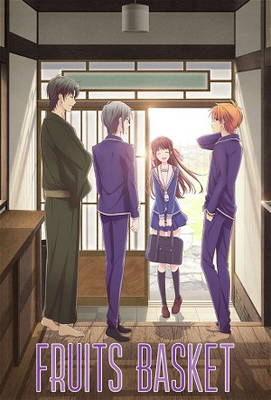

Fruits Basket (2019) (2019)
FantasyDramaComedyAnimationAnimeRomance
| Year | 2019 |
|---|---|
| Rating | TV-PG |
| Status | Completed |
| Seasons | 4 |
| Episodes | 64 |
| Genre | Fantasy, Drama, Comedy, Animation, Anime, Romance |
After a family tragedy turns her life upside down, 16-year-old high school student Tohru Honda takes matters into her own hands and moves out… into a tent! Unfortunately for her, she pitches her new home on private land belonging to the mysterious Soma clan, and it isn't long before the owners discover her secret. But, as Tohru quickly finds out when the family offers to take her in, the Somas have a secret of their own—when hugged by the opposite sex, they turn into the animals of the Chinese Zodiac!
Episodes
Specials
| # | Title | Air Date | Synopsis |
|---|---|---|---|
| 1 | Fruits Basket: Prelude | 2022-02-18 | Before there was Tohru and Kyo, there was Katsuya and Kyoko. Discover the turbulent beginning of Tohru’s mom’s dark past, and the man who breathed new hope into her. |
Season 1
Tooru Honda has always been fascinated by the story of the Chinese Zodiac that her beloved mother told her as a child. However, a sudden family tragedy changes her life. Tooru is now forced to live in a tent, but she didn't know that her temporary home resides on the private property of Souma family. Stumbling upon their home one day, she encounters Shigure and Yuki. Tooru explains that she lives nearby, but the Soumas eventually discover that she's homeless when they see her walking back to her tent one night.
Things start to look up for Tooru as they kindly offer to take her in after hearing about her situation. But soon after, while trying to stop a fight between Yuki and his hot-tempered cousin, Kyou, she learns Souma family's
secret: whenever they are hugged by a member of the opposite sex, they transform into the animals of the Chinese Zodiac.
With this new revelation, Tooru will find that living with the Soumas is an unexpected adventure filled with laughter and romance.
| # | Title | Air Date | Synopsis |
|---|---|---|---|
| 1 | See You After School | 2019-04-06 | Temporarily homeless high school student Tohru Honda doesn't want to cause her friends any trouble, so she's been secretly living in a tent instead of asking to stay with any of them. Then she meets the owners of the lan |
| 2 | They're All Animals! | 2019-04-13 | Tohru learns the Soma family's shocking secret: they transform into zodiac animals! Is this show a zodiac animal transformation home comedy?! |
| 3 | Let's Play Rich Man-Poor Man! | 2019-04-20 | Kyo and Yuki both confide in Tohru about their insecurities, and she discovers that they have a lot in common for people who seem like such opposites. |
| 4 | What Year Is She? | 2019-04-27 | Kagura Soma visits and expresses her rather explosive love for Kyo. At first she regards Tohru as a potential rival, but she soon comes to realize that Tohru is interested in friendship, not fighting. |
| 5 | I've Been Fooling Myself | 2019-05-04 | Tohru has come to think of the Somas as her new family, but her faith in herself and in her relationships is shaken when her biological family says they're ready to take her back. |
| 6 | Perhaps We Should Invite Ourselves Over | 2019-05-11 | On school festival day, the gang sells a ton of rice balls thanks to an innovative Prince Yuki marketing technique. Bonus: two other members of the Soma family come to the festival to introduce themselves. |
| 7 | Spring Comes | 2019-05-18 | A nervous Tohru visits the main Soma estate for her meeting with Hatori. There, she finds out the backstory behind Hatori's seemingly harsh attitude toward her. |
| 8 | See You When You Get Back | 2019-05-25 | Tohru tries to figure out how to cause everyone the least amount of trouble over the New Year's holiday. Meanwhile, Yuki and Kyo try to figure out how to survive three days without Tohru. |
| 9 | Yuki Was My First Love | 2019-06-01 | Kyo fights Yuki, Yuki fights a cold, and Tohru meets a new Soma whose mood swings may be even more extreme than Kagura's. |
| 10 | It's Valentine's, After All | 2019-06-08 | Shigure does some serious scheming while Kagura, Kyo, Yuki, and Tohru all go on a double date. |
| 11 | This Is a Wonderful Inn | 2019-06-15 | It's "White Day," the day that boys who received chocolates on Valentine's Day give their return gifts to the girls. And Momiji has one big surprise gift for Tohru! |
| 12 | You Look Like You're Having Fun | 2019-06-22 | It's the first day of the new school year, and the students of Kaibara High School gets their first look at Momiji and Hatsuharu's "unique" approach to school uniforms. Another member of the Soma family also pays a visit |
| 13 | How Have You Been, My Brother? | 2019-06-29 | Tohru meets a man she never knew existed, and learns something about Yuki that she never knew before. |
| 14 | That's a Secret | 2019-07-06 | Tohru learns more about Momiji Soma and visits her mother's grave with her friends. |
| 15 | I Wouldn't Say That | 2019-07-13 | Tohru, Yuki, Kyo, Shigure, and Hatori go on a trip to the Soma vacation house near a lake. |
| 16 | She Said Don't Step on Them! | 2019-07-20 | Uotani plans a group gift for Tohru. Then, the Somas learn more about Uotani's past. |
| 17 | This Is for Uo-chan! | 2019-07-27 | Uotani continues to tell about her past and how meeting Kyoko and Tohru impacted her. |
| 18 | What's Important Is… | 2019-08-03 | Hatsuharu unexpectedly shows up with a new Soma who doesn't speak a word. |
| 19 | I'm So Sorry! | 2019-08-10 | Another Soma comes to visit, while Mitsuru begs Shigure for his manuscript. |
| 20 | I Can't Believe You Picked It Up | 2019-08-17 | Hiro Soma comes to introduce himself, and it rapidly becomes obvious that he is not a Tohru Honda fan. |
| 21 | I Never Back Down from a Wave Fight | 2019-08-24 | Members of the Prince Yuki Fan Club do some scheming and visit Hanajima's house. |
| 22 | Because I Was Happy | 2019-08-31 | We learn more about Hanajima's past and how she meets Uotani and Tohru. |
| 23 | You Look Well… | 2019-09-07 | Tohru comes down with a cold, and the Somas help her while she recovers. |
| 24 | Let's Go Home | 2019-09-14 | Kazuma Soma's visit to the house is more than a casual visit, especially for Kyo. Will we finally find out Kyo's secret? |
| 25 | Summer Will Be Here Soon | 2019-09-21 | Kazuma leaves without a word to Kyo while Yuki and Kagura fight their own battles. Then, Shigure gathers everybody for dinner at his house. |
Season 2
It’s been almost a year since Tooru started living at Shigure’s house! Though she now has a deeper relationship with each of the Soumas, not just Yuki and Kyou, she is concerned about their sinister curse’s true nature.
Summer is approaching and Tooru is invited to spend her days with the Soumas, mainly Kyou and Yuki. Tooru wishes for an easy-going vacation, but her close relationships with the two boys and the rest of the Soumas may prove to cause trouble. As they grow more intimate, their carefree time together is hindered by older hardships and feelings from the past that begin to resurface. The Eternal Banquet also dawns on the members of the zodiac, and they must tend to their duties alongside the unnerving head of the family, Akito Souma.
With the banquet approaching and a plethora of feelings to be solved, will Tooru's life with the Soumas remain peaceful, or will she find herself in a situation from which she cannot escape?
| # | Title | Air Date | Synopsis |
|---|---|---|---|
| 1 | Hello Again | 2020-04-07 | Motoko continues to fawn over Yuki from afar as he meets Kakeru Manabe and Machi Kuragi, an odd pair with quirky habits. |
| 2 | Eat Somen with Your Friends | 2020-04-14 | The students need to submit their career plan forms before summer break begins, but thought of the future brings a wave of anxiety along with it. |
| 3 | Shall We Go and Get You Changed? | 2020-04-21 | After Ayame drops by Shigure's house, Yuki decides to visit Ayame's shop for the first time together with Tohru. |
| 4 | I Got Dumped… | 2020-04-28 | The students in class 2-D plan for their upcoming school trip. Meanwhile, Hatsuharu goes on a rampage, but nobody knows why. |
| 5 | Wait for me, tororo soba! | 2020-05-05 | Summer break has started and Tohru and the crew have some fun at the department store. Then, Uotani meets someone who reminds her of Tohru at work. |
| 6 | Are you really this stupid? | 2020-05-12 | Momiji convinces Tohru to join the Somas at their vacation house by the ocean for some fun in the sun. |
| 7 | Let's Start the Watermelon Splitting Contest! | 2020-05-19 | During their stay at the vacation house, Tohru and the Somas get exciting news and surprise visitors. |
| 8 | It's True, Isn't It? | 2020-05-26 | Isuzu leaves Kagura’s house without explanation. At the same time, Akito is now at the vacation house. What is Akito planning? |
| 9 | My Precious... | 2020-06-02 | Kyo is summoned to join Akito at the annex along with the other zodiac members. How will Kyo cope with meeting Akito? |
| 10 | Who Are You? | 2020-06-09 | What’s better than winding down the summer with some fireworks? Tohru and the Somas plan to do just that as their trip comes to a close. |
| 11 | All Mine | 2020-06-16 | Tohru and the Somas return from their trip and Kagura invites Kyo on a date for some serious talk. |
| 12 | You Cried for Me | 2020-06-23 | Mayuko goes down memory lane after getting a few visitors at her family bookstore. |
| 13 | Sure Thing | 2020-06-30 | The new term starts and Yuki takes on his duties as the student council president. |
| 14 | I Might as Well Die, Then... | 2020-07-07 | A family emergency comes up for Tohru, and Yuki starts to realize why Rin acts the way she does. |
| 15 | See You Later | 2020-07-14 | Parent-teacher conferences to discuss career plans are underway, triggering various emotions in the students. |
| 16 | Ask Him for Me | 2020-07-21 | Tohru takes it upon herself to venture into the Soma Estate where she meets someone unexpected. |
| 17 | You Will, I'm Sure of It | 2020-07-28 | Tohru and her classmates are in Kyoto for their school trip to create some lifelong memories. |
| 18 | Do You Wanna Kiss? | 2020-08-04 | Isuzu, the zodiac Horse, is determined to make change and seeks out Shigure for some answers. |
| 19 | There's Just No Way! | 2020-08-11 | Isuzu spends the night recuperating at Shigure’s, giving a chance for Tohru and Isuzu to get to know each other. |
| 20 | Are You Okay? | 2020-08-18 | With the school culture festival around the corner, Yuki is kept busy as he juggles the student council and class duties. |
| 21 | There Was, Definitely | 2020-08-25 | Yuki loses himself in thought as he remembers a dark memory from his childhood. |
| 22 | That Isn't What I Want | 2020-09-01 | While the school prepares for the culture festival, Yuki talks about his secret that he’s never told anyone else. |
| 23 | It's Cinderella-ish | 2020-09-08 | Tohru’s class puts on an unconventional retelling of Cinderella at the school culture festival. |
| 24 | Here You Are | 2020-09-15 | Another New Year’s means another banquet for the zodiac members at the Soma estate. |
| 25 | I'm Different Now | 2020-09-22 | A winter chill lingers in the air as memories revealing some of Kureno's mysterious past and present emerge. |
The Final
Hundreds of years ago, the Chinese Zodiac spirits and their god swore to stay together eternally. United by this promise, the possessed members of the Souma family shall always return to each other under any circumstances. Yet, when these bonds shackle them from freedom, it becomes an undesirable burden—a curse. As head of the clan, Akito is convinced that he shares a special connection with the other Soumas. While he desperately clings to this fantasy, the rest of the family remains isolated and suppressed by the fear of punishment.
| # | Title | Air Date | Synopsis |
|---|---|---|---|
| 1 | I’ll Hold Another Banquet | 2021-04-06 | As Season 3 begins, Tohru struggles to digest all the new information she's learned from Kureno. |
| 2 | That's an Unwavering Truth | 2021-04-13 | Tohru isn't sure who to talk to, or how many secrets to keep. Meanwhile, one of Shigure's secrets begins coming to light. |
| 3 | I Hope It Snows Soon | 2021-04-20 | A shocking rumor spreads about Machi. Love confessions are in the air, too: Kaibara High School's seniors are rushing to gain closure with their secret crushes before graduation. |
| 4 | I'm… Home. | 2021-04-27 | The Somas get increasingly worried when no one can find Rin. |
| 5 | I Mean… You Know, Right? | 2021-05-04 | Momiji seems completely different this school year! He's got a taller body and a deeper voice, but has anything changed on the inside? |
| 6 | It Was So Foolish | 2021-05-11 | Kyo is thinking about the past. Tohru is thinking about the future. But they're both thinking about each other. |
| 7 | That's Right, It's Empty | 2021-05-18 | Kyo has a nightmare about the mothers in his life. Akito and Ren are still dealing with Akira's death. |
| 8 | I'm Disappointed in You | 2021-05-25 | Kyo and Tohru have a painful conversation. |
| 9 | What's Your Name? | 2021-06-01 | Yuki goes looking for Kyo. Tohru and Akito finally connect, but then they both get a shock. |
| 10 | I Just Love Her | 2021-06-09 | After a fight, Yuki and Kyo each figure out what they want to do next. |
| 11 | Goodbye | 2021-06-15 | Kyo finally tells Tohru what he should have told her in the first place. And we finally hear the true, original zodiac story. |
| 12 | You Fought Well | 2021-06-22 | Akito makes a drastic choice that will affect the futures of the whole Soma family. |
| 13 | See You Again Soon | 2021-06-29 | Tohru, the Somas, and all of their friends prepare for the next chapters of their lives. |